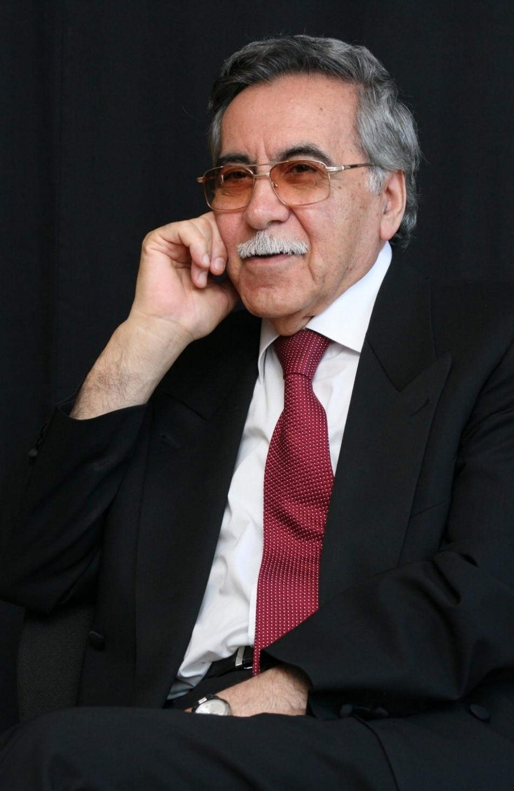
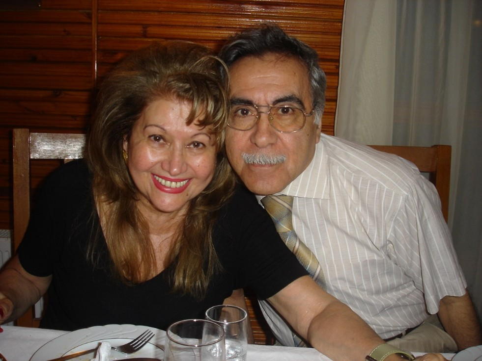

Nəsr
İnsan münasibətləri, həyat və zaman haqqında hekayə və nəsr əsərləri.
“Bir ürəyin hərarəti” · “Kişilər az yaşadı”YAZIÇI · ŞAİR · ALİM
Sözə, elmə və Azərbaycan mədəniyyətinə həsr olunmuş bir ömür.
Həyatını kəşf et 1936 — 2020
Aqşin BabayevAQŞİN ƏLİSƏTTAR OĞLU BABAYEV
Aqşin Babayev 23 noyabr 1936-cı ildə Bakıda anadan olub. Jurnalistika, radio və televiziya fəaliyyəti, elmi araşdırmaları və zəngin ədəbi yaradıcılığı ilə Azərbaycan mədəniyyətinə dəyərli töhfələr verib.
Bu səhifə onun həyat yoluna və gələcək nəsillərə miras qoyduğu mənəvi irsə ehtiramdır.
Həyat yoluna bax
1936 — 2020
Ədəbi və elmi fəaliyyətlə zəngin ömrün seçilmiş məqamları.
ƏDƏBİ VƏ ELMİ İRS
Nəsr, poeziya, dramaturgiya və ədəbiyyatşünaslıq sahələrini əhatə edən irs.
İnsan münasibətləri, həyat və zaman haqqında hekayə və nəsr əsərləri.
“Bir ürəyin hərarəti” · “Kişilər az yaşadı”Duyğuların, yaddaşın və insanın daxili dünyasının poetik ifadəsi.
“Ayrılıq” · “Dünya vəfalıdır”Türk dramaturgiyası, Nazim Hikmət və Azərbaycan ədəbiyyatı haqqında araşdırmalar.
“Müasir türk dramaturgiyası”FOTO XATİRƏLƏR
Şəkli böyütmək üçün üzərinə kliklə.
ƏBƏDİ YADDAŞ
“Çalışmaq da ibadətdir.”
— Aqşin Babayev